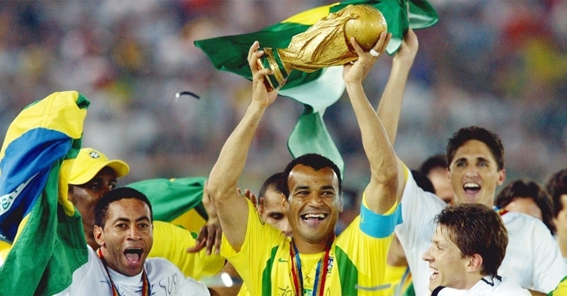

Brasil é campeão da copa do mundo derrotando a Argentina por 3x0 e Neymar se consagra melhor do mundo!
Por: Leonardo e Daniel
Neste sábado o Brasil ganhou a copa do mundo em cima da Argentina, derrotando ela por 3x0, e Neymar se consagra melhor do mundo